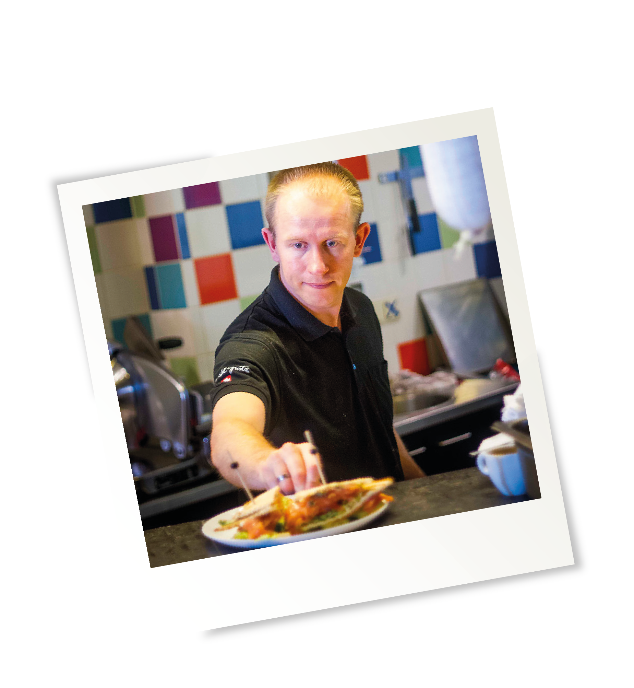

LAUGHTER IS BRIGHTEST WHERE FOOD – AND COFFEE – ARE BEST
Espressobar Chavez is geïnspireerd op de café-cultuur van de Australiërs. Zij leven buiten de deur, ontmoeten elkaar in lokale koffiezaakjes. De koffie wordt er gezet door een traditionele barista, die de gasten graag helpt het perfecte kopje koffie te kiezen. Een cultuur naar ons hart, en precies dat is wat wij je ook brengen. Great coffee, great food. Dat is Espressobar Chavez. De kwaliteit proef je niet alleen in onze smaakvolle koffie(specials), maar het geldt voor alles wat uit onze eigen keuken komt.  Broodjes, taarten, smoothies en sappen, van healthy tot sinner, alles altijd vers gemaakt. In onze espressobar kom je om bij te kletsen, te eten, drinken, werken, te genieten. Espressobar Hugo is je tweede huiskamer. Welkom!
COFFEE IS OUR CUP OF TEA
Je vindt Espressobar Chavez in Gorinchem. Met zijn eigen charme en smaakvolle, krachtige koffie(specials), een keuken vol healthy, mooie producten om de lekkerste ontbijtjes, taarten en lunches te bereiden en een huiselijke sfeer.